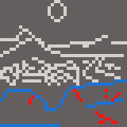

Do you think you should've lived?
You take the lower path. You contiue to trudge through the path. The woods get thicker and thicker, and it's becoming harder and harder to see. Without moonlight, you'd be completely lost. You trip and fall, but it can't stop you, not now. Exhaustion sets in. You can't take this anymore. You find a secluded area off the path, and make a small but hidden clearing. This becomes the rest of your very short life. Leg infection, food poisoning, and sickness quickly set in the coming days. You know your time is pretty much over. You find a nice spot that overlooks this horrific valley you've been forced to call home. You close your eyes for the very last time.
